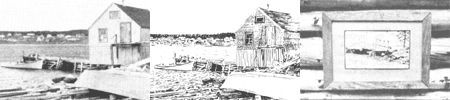

PHOTO/ILLUSTRATION BY THE AUTHOR
This plain old everyday black-and-white photo can, with a few hours' work and a total investment of 54? . . . be turned into this ""work of art"", which may be ... framed with recycled materials and sold for $16!